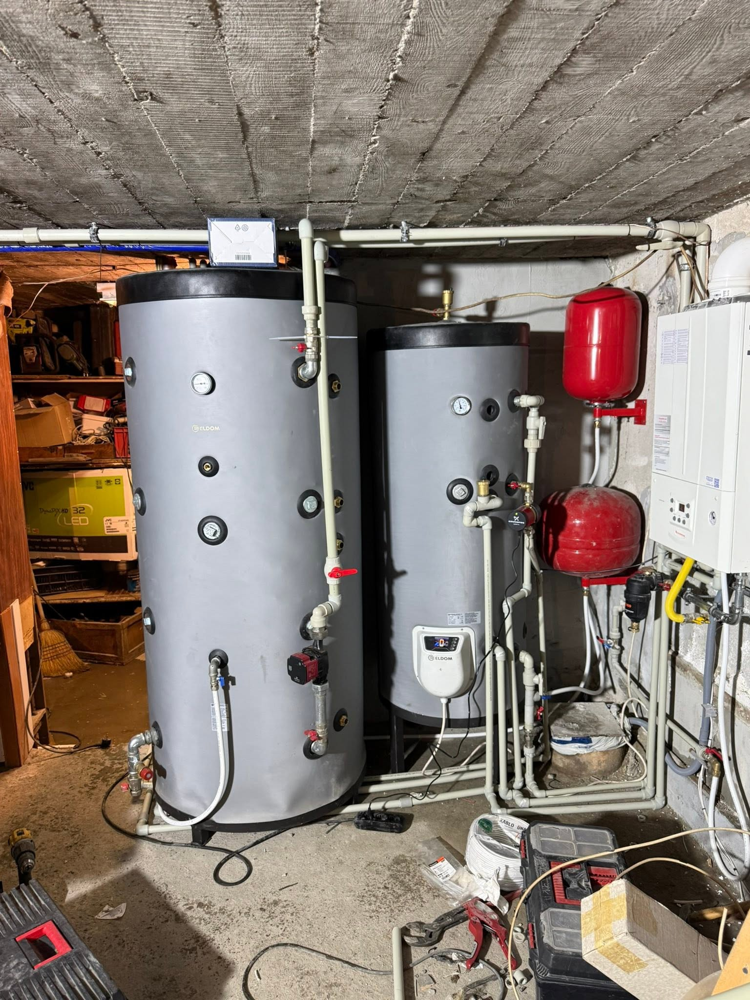
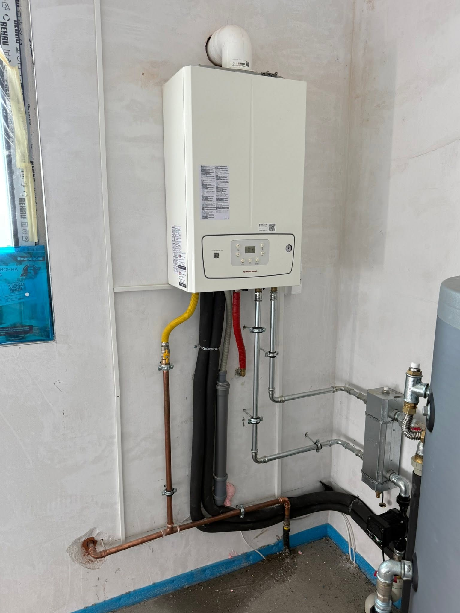
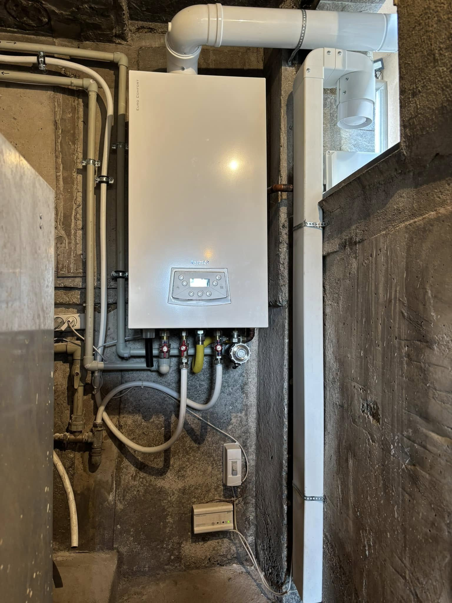
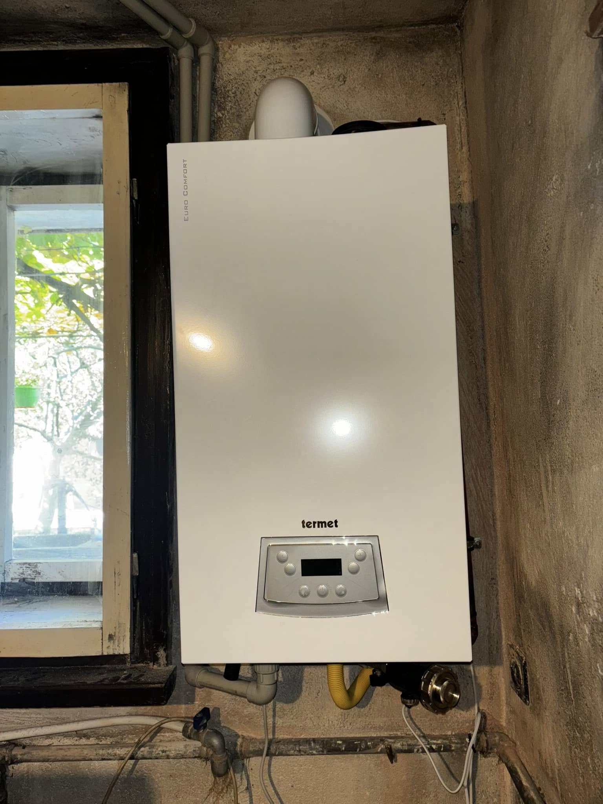

Какво включва монтажът на газов котел
Базата ни е в Костинброд. Работим в София и София област — от оглед и оферта до монтаж и настройка.
Работим с утвърдени марки, включително Immergas. След оглед уточняваме дали сменяме съществуващ котел или правим нова връзка към газовата и отоплителната инсталация. Целта е чиста работа, стабилна система и кратък инструктаж на място.
Монтираме газови котли за отопление и битова гореща вода в къщи и апартаменти. На огледа уточняваме модела, мястото, отвеждането на димните газове и дали вече има газова връзка.
Работим с утвърдени марки, включително Immergas. Ако са нужни газови трасета, резервоар или узаконяване, ги описваме като отделни редове в офертата — без скрити добавки.
- Доставка и монтаж на газови котли
- Връзка към газовата и отоплителната инсталация
- Програматори и терморегулация
- Пускане и прецизна настройка
Колко струва монтажът — ориентир
Трудът при смяна на газов котел обикновено е около 250–450 лв — според достъпа и връзките. Нов монтаж с допълнителни трасета се оферира след оглед. Самият котел се калкулира отделно.
Какво не е включено / уточняваме честно: Не продаваме котел „на сляпо“ без оглед. Големи промишлени котелни поемаме само след ясно уточнен обхват.
От реален обект
Къде монтираме газови котли
Газови котли монтираме в София и София област. Базата е в Костинброд — удобна за столицата и западните населени места.
Подробности по населени места ↓
От оглед до пускане на котела
Оглед
Преглед на инсталацията, комина/отвеждането и мястото за котела.
Оферта
Модел, труд и срокове — без изненади след старта.
Монтаж
Свързване, изпитания и настройка на комфорта.
Пускане
Инструктаж и съвети за експлоатация.
Снимки от монтажа



Въпроси за газови котли
Какъв е ценовият ориентир за монтаж газов котел?
Трудът при смяна на газов котел обикновено е около 250–450 лв — според достъпа и връзките. Нов монтаж с допълнителни трасета се оферира след оглед. Самият котел се калкулира отделно.
Колко струва монтаж на газов котел?
Зависи от модела и дали се изгражда нова връзка. Оферта след оглед на 0886 391 729.
Монтирате ли в София и областта?
Да. Базата е в Костинброд — работим в София и София област, включително Сливница, Драгоман, Божурище, Банкя и наоколо.
Работите ли с Immergas?
Да — монтираме утвърдени марки, включително Immergas.